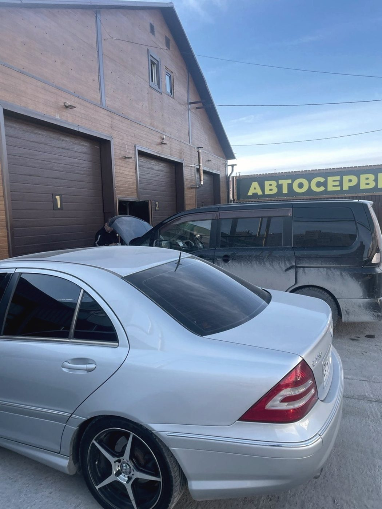
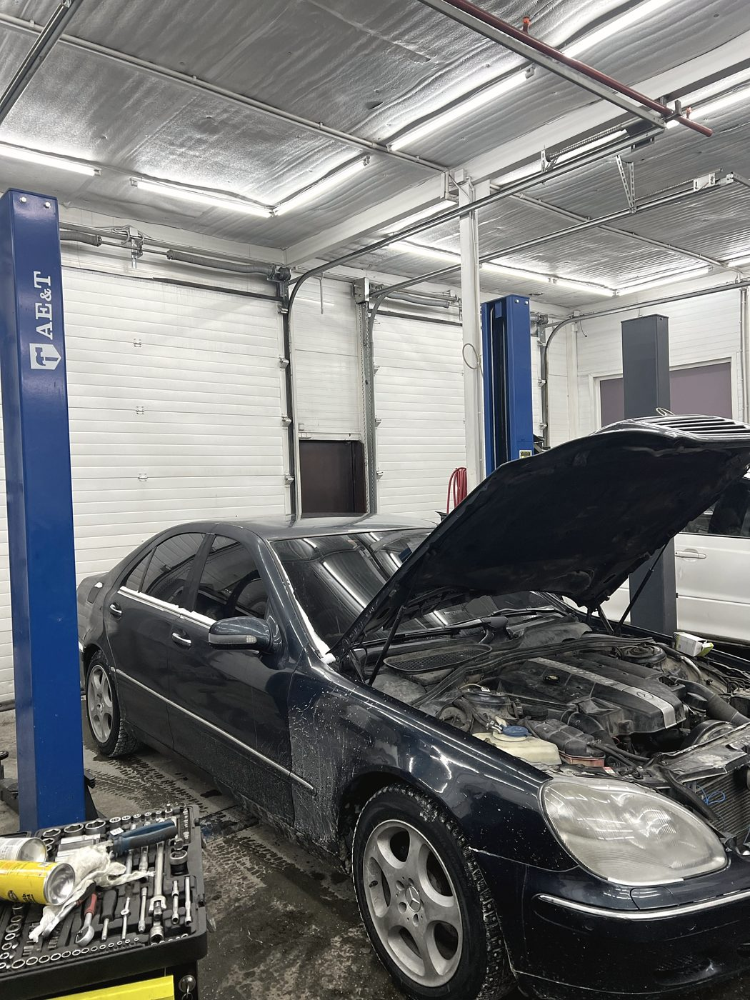
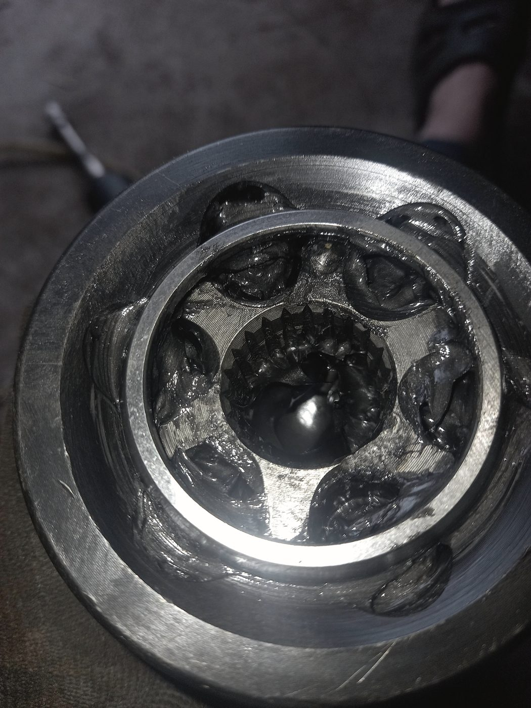
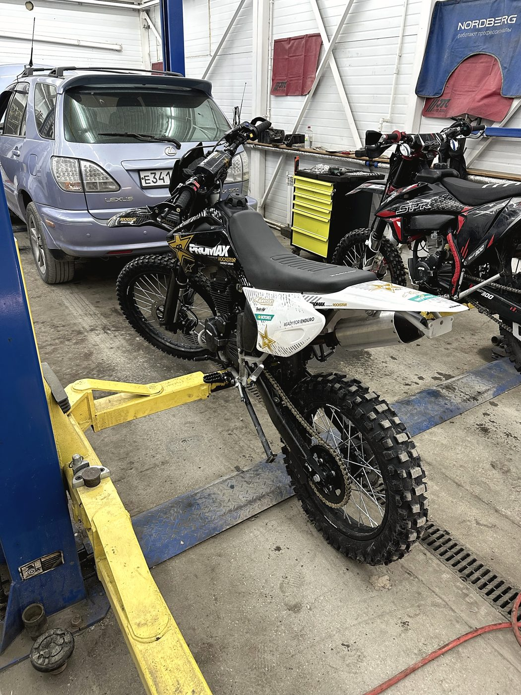
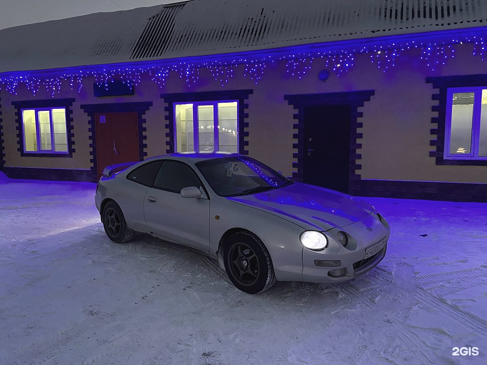
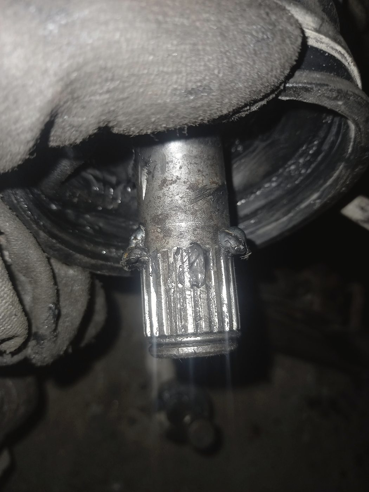
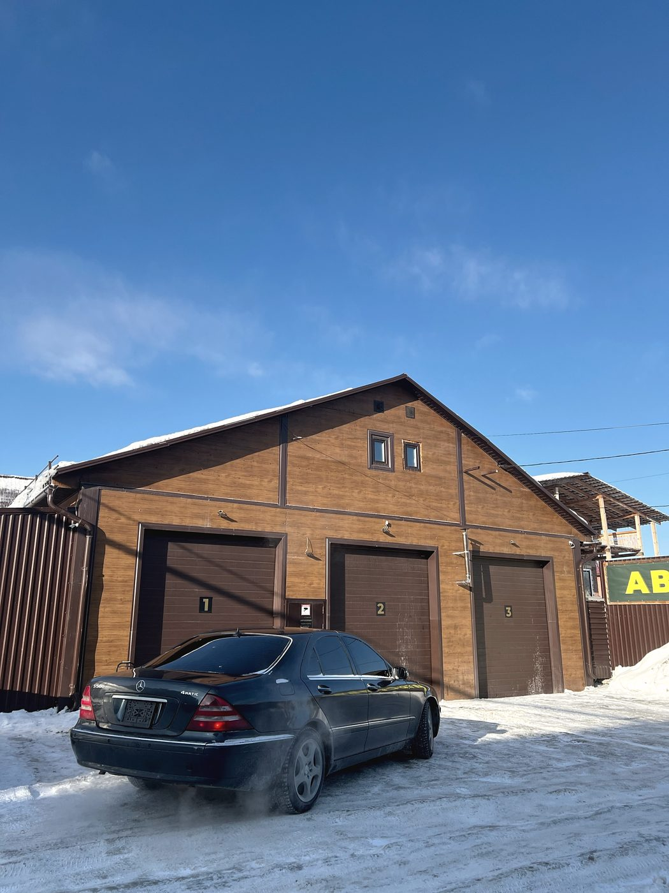

Автосервис · 9-й Порт-Артурский переулок, 74 · Чистая слобода
К назначенному времени
деталь уже здесь
Записываем на конкретный час и к нему заказываем всё, что понадобится. Поэтому машина не стоит в ожидании поставки, а вы забираете её тогда, когда договорились, — а не «ну вы позвоните завтра».

По записи
Как проходит
обычный заезд
Так это описала Татьяна в отзыве — и так оно и работает, если детали заказаны заранее.
Созваниваемся, вы описываете проблему. Если понятно, что менять, — заказываем деталь сразу, чтобы к вашему приезду она была здесь.
Приезжаете к назначенному времени. Не в общую очередь, а на свой час.
Машина на подъёмнике. Если по ходу вскрылось что-то ещё — звоним и объясняем, а не решаем за вас.
Забираете. Мастер рассказывает, что сделали, и советует, на что смотреть дальше.
Что берём
Не только легковые
Иномарки и отечественные. Ходовая, двигатель, электрика, выхлоп, климат, шиномонтаж — полный набор на одной площадке.
Мотоциклы обслуживаем наравне с машинами. Для города это редкость: большинство сервисов за них не берётся.
Ремонт пневмостоек и компрессора. Работа, которую часто отправляют «к специалистам» — специалисты здесь.
Когда мотор троит и причину долго не могут найти — разбираемся с топливной частью по-настоящему, а не меняем всё подряд.
Работы
Что делаем
Компьютерная диагностика
Читаем ошибки и проверяем по факту. Если вы сами предполагаете причину — проверим и вашу версию тоже.
Ходовая часть
Стойки, рычаги, ступицы, сайлентблоки, ремонт пневмоподвески, проточка тормозных дисков.
Двигатель и инжекторы
Ремонт бензиновых моторов, промывка форсунок, работа с топливной частью. После этого расход обычно уходит вниз.
Выхлопная система
Ремонт и замена элементов, устранение прогаров.
Сварочные работы
Пороги, днище, крепления, глушитель. Варим здесь же.
Замена масла
Двигатель и коробка. Заодно смотрим, что видно на подъёмнике.
Климат и кондиционер
Заправка, поиск утечек, обслуживание отопителя.
Шиномонтаж и правка дисков
Переобувка по записи, правка и прокатка дисков после ям.
Запчасти и автохимия
Подвеска, тормоза, рулевое, топливная, трансмиссия, оптика, расходники. Заказываем заранее — к вашему времени.



Отзывы · 4,6 из 5 по 265 оценкам в 2ГИС
«Приехала в назначенное время, поменяли то, что заранее заказали мне, машину забрала через час, как и договаривались»
Татьяна Новикова · 21 июля 2026
Уже не первый раз пригоняю машину в этот сервис. Ни разу не подвели: всегда детально объясняли причину поломки, поэтапно рассказывали о ходе работ и давали дельные советы по уходу за автомобилем на будущее.
Матвей Кузин · 14 июля 2026
Приезжал с ремонтом двигателя и промывкой форсунок. Троил мотор, долго не могли понять причину, потом разобрались с топливной частью. После ремонта стал ровнее работать, расход немного ушёл вниз.
Даниил Ефимов · 6 июля 2026



Контакты
Порт-Артурский, 74
Ленинский район, Новосибирск
Понедельник — выходной